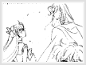
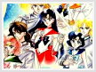

Entity » The Idol
» Rumored love?
This controversy has been argued time after time, and I'm very tired of it. There are firm believers for the Zoisite & Kunzite romance, and there are equally firm believers to the General and Senshi romance. The truth is, they both exist. However, The General and Senshi romance existed only in the manga and back 1000 years ago in the Silver Millennium. While those were only memories, the Zoisite and Kunzite relationship only existed in the anime. Although there is much more proof of Zoisite and Kunzite's romance, that doesn't mean that Venus and Kunzite's romance is a fake. I have given some examples of the Kunzite and Venus romance below, as well as a brief history of the Silver Millennium and what the story is. I hope this will clear up the misunderstandings of the Venus and Kunzite Romance being a rumor.
A thousand years ago, Silver Millennium was at peace. The ruler of the kingdom of Silver Millennium was Queen Serenity, also known as Selene/Selenity, the Goddess of the Moon. Serenity had a daughter named Princess Serenity, who was heir to the throne of the kingdom. Princess Serenity had four guardian senshi for protection, and they were known as the inner senshi: Sailor Venus, Sailor Mercury, Sailor Mars and Jupiter.
Back then, it was forbidden for the people of the Moon and the people of Earth to meet. But Princess Serenity, as she was curious, went against the laws and always went to Earth to explore. It was on Earth that she met Prince Endymion, the prince of the Earth, and the two fell in love. Endymion also had four guardians for protection, and they were Kunzite, Jadeite, Nephrite and Zoicite. Originally the four were protectors of Earth and the Prince, but that eventually changed after they were turned evil by Queen Beryl.
It was rumored that the Inner Senshi and the Generals always sneak to the Earth and the Moon to see each other. But that was just a rumor. But for Mars and Venus, there were little hints scattered throughout the manga for evidence of a romance between the generals and the senshi. The inner senshi knew that Princess Serenity often sneak down to Earth to meet Prince Endymion, and they would often lecture her for the dangers. Venus constantly had to go and make sure that the princess was safe and return her back to the Moon, thus, this accounts for the meet and eventual relationship of the Venus and Kunzite romance.
 As I've said before, several hints were dropped in the manga of the Venus and Kunzite romance. To illustrate, there was a memory of Princess Serenity back in the Silver Millennium in Sailor Moon Manga Volume 3, Act 12, The Decisive Battle / Reincarnation. Sailor Venus found Princess Serenity getting ready to go see Endymion again, and Serenity told Venus that she didn't know her feelings because she's never fallen in love with anyone before. All the while, Venus had her eyes on Kunzite. Venus then replied while winking, "Geez, you don't know anything." Another of Venus/Kunzite Romance can be found in a memory in Sailor V Manga, Vol 15. , A New Journey Begins. Adonis saw several scenes back in the Silver Millennium, including Venus staring into Kunzite's eyes. For more on who Adonis is, please visit Last True Love.
As I've said before, several hints were dropped in the manga of the Venus and Kunzite romance. To illustrate, there was a memory of Princess Serenity back in the Silver Millennium in Sailor Moon Manga Volume 3, Act 12, The Decisive Battle / Reincarnation. Sailor Venus found Princess Serenity getting ready to go see Endymion again, and Serenity told Venus that she didn't know her feelings because she's never fallen in love with anyone before. All the while, Venus had her eyes on Kunzite. Venus then replied while winking, "Geez, you don't know anything." Another of Venus/Kunzite Romance can be found in a memory in Sailor V Manga, Vol 15. , A New Journey Begins. Adonis saw several scenes back in the Silver Millennium, including Venus staring into Kunzite's eyes. For more on who Adonis is, please visit Last True Love.
Although there's little proof in the manga and absolutely none in the anime, it doesn't mean that the Senshi and Generals romance is a complete rumor. The colored manga featuring the 4 senshi with their respective generals is drawn by Naoko herself. The art of Venus and Kunzite kissing, however, is indeed a doujinshi picture. There are people who stretch the Generals romance a bit far, and they write fanfics on them. Some people may have read the fics and mixed it up with the real story. This is probably the biggest cause to others thinking that this was a complete rumor.